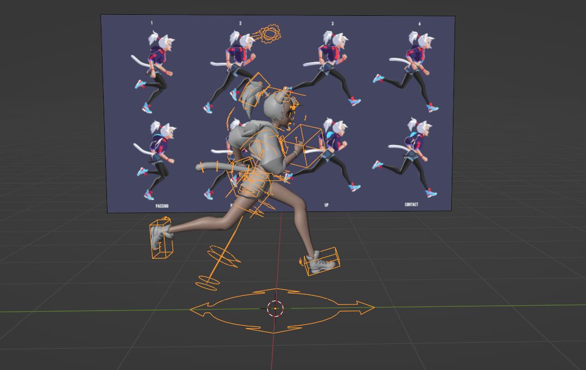

PROJECTS · demo
Run Cycle
一段循环跑步动画，来自《数据驱动动画》课程（COMP7508）的角色动画练习。
制作流程
- 绑定 — 使用 AutoRig Pro 为角色建立完整的骨骼与控制器，并完成蒙皮；
- 动画 — 参照跑步的参考图片，逐帧摆出接触、蹬地、腾空、缓冲等关键姿势，再补齐中间帧形成循环；
- 渲染 — 在 Blender 中布光、设定相机后渲染输出。

PROJECTS · demo
一段循环跑步动画，来自《数据驱动动画》课程（COMP7508）的角色动画练习。
